Evènman BAK Lakay
Pase yon bèl jounen pandan n ap selebre libète
Byenveni nan BAK Lakay la, kote tout moun rakonte yon istwa ki gen etensèl libète
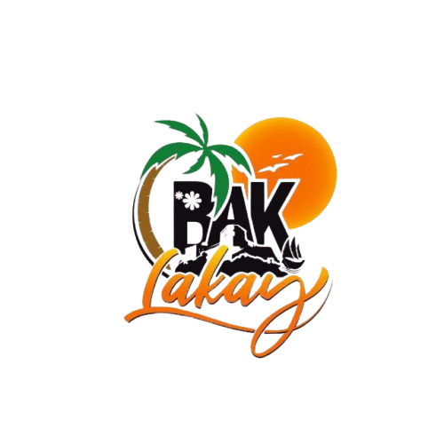
Byenveni nan BAK Lakay la, kote tout moun rakonte yon istwa ki gen etensèl libète

Bak Lakay se yon platfòm pou ka atire atansyon tout moun sou tout bèl opòtinite ki genyen an Ayiti epi ekspoze aklè tout richès peyi a genyen tankou min yo, moun yo ak tout lòt kalte resous li yo, ni nan kapital la ni nan vil pwovens yo. Bak Lakay tou se yon envitasyon ak tout dyaspora yo, tout pitit peyi a oswa kèlkeswa lòt moun ki renmen peyi sa a pou yo ka vin envesti epitou vin pwofite pran plezi yo sou bèl zile sa a. Konsa y ap kapab ede peyi sa a avanse, yon nasyon ki gen anpil richès, men ki manke jwenn moun pou eksplwate yo. Kidonk «BAK LAKAY», anplis se yon ankourajman pou tout pitit peyi a retounen, se yon apèl pou eseye rejwenn yon seri bon abitid nou te pèdi oswa nou te neglije.
Bak Lakay se pa sèlman yon tikè k ap pèmèt moun retounen nan peyi a. Se plis pase yon senp retounen fizikman lakay. Se pito yon fason pou jwenn amoni ak volonte ki nesesè pou nou patisipe nan konstriksyon peyi a kèlkeswa kote yon moun ye nan mond lan. Si nou reve yon Ayiti ki pi bon se paske dabo nou konsyan jodi a gen anpil pwoblem sosyete nou an ap travèse. Sa fe malgre tout richès ak opòtinite kap pase devan je nou jiskaprezan nou poko vle degaje nou eksplwate yo, oubyen pou n envante lot rezon pou frè ak sè nou yo viv byen. Nou sipoze konprann Ayiti sa nou merite a se nou menm ki pou envante l donk nou menm ki pou plante l, nou menm ki pou prepare jèm sa nou bezwen yo epi simen yo nan chak grenn Ayisyen.
Bak Lakay la tou se yon plan rekonstriksyon nou pwopoze pou peyi a ki gen plizyè etap ladanl. Nou te regwoupe yo konsa:
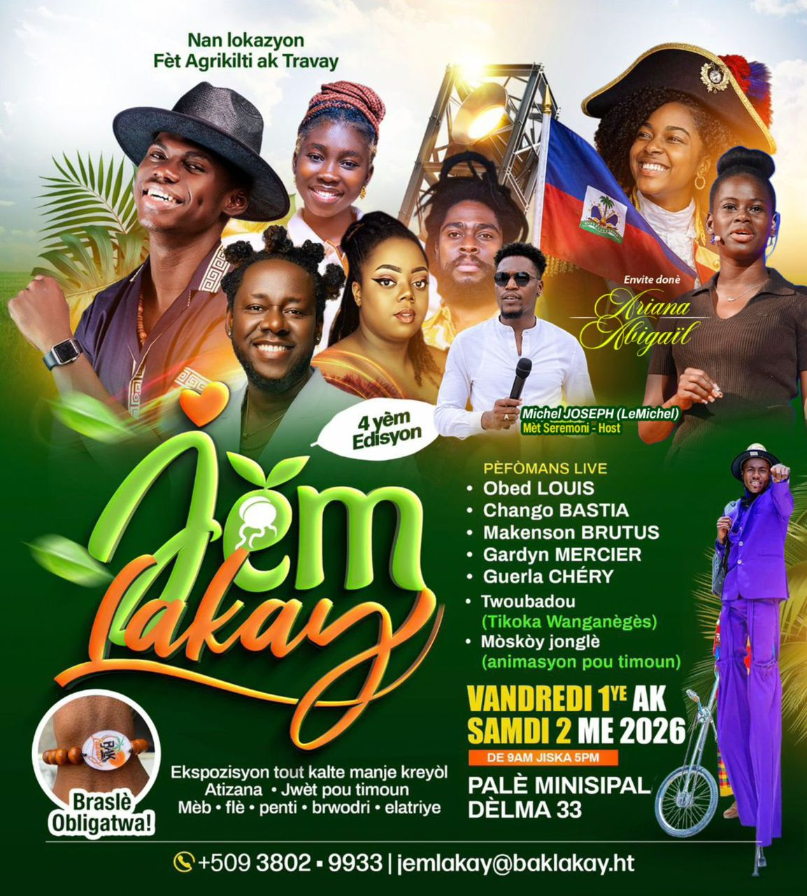
Jèm Lakay
Plizyè dizèn Atizan ak Atis sòti nan plizyè pati depatman lwès la pou te patisipe nan evènman sa.
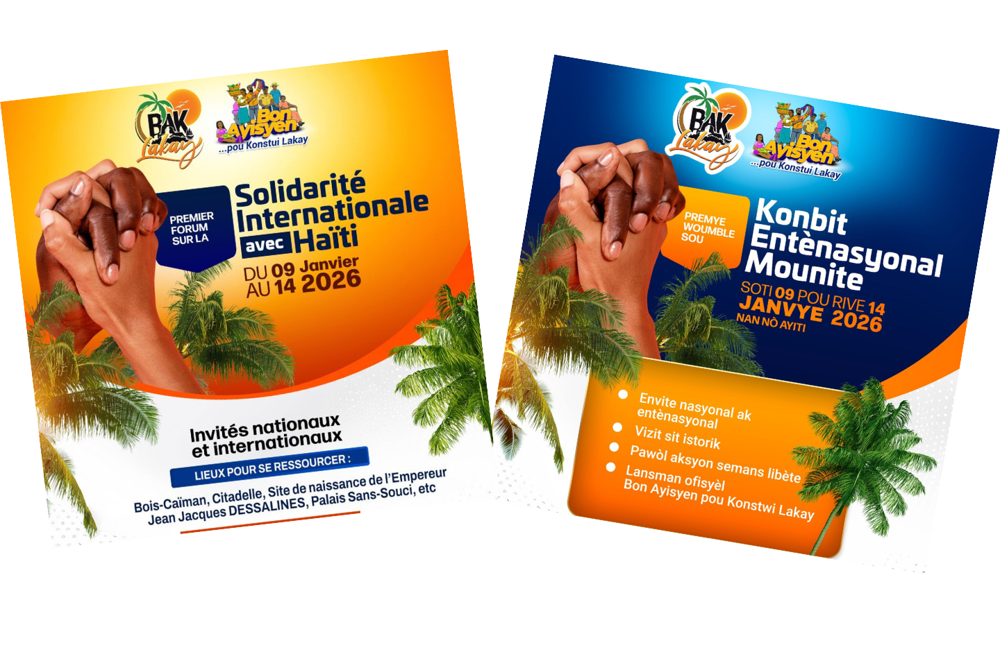
Jou 0 (samdi 10 Janvye 2026)
Plizyè dizèn Delege ak manb Pati a sòti nan plizyè depatman peyi a pou te patisipe nan evènman sa.
Jou 1 (Dimanch 11 Janvye 2026)
De 7am a 10am : Plizyè manb Pati a ki pa moun Okap te vizite kèk Legliz pou adore selon lafwa ak kwayans yo.
De 10am a midi : Lòt Delege ak manb ki poko te rive yo debake nan Okap.
Vè 3h Pm : Nou lanse ofisyèlman Kongrè a nan "Jan Jak" kote Papa Nasyon an te pran nesans zòn Kòmye nan Granrivyè dinò.
De 7 pm a 10pm : Rankont estratejik nan aswè pou fè bilan Jounen an epi prepare Jounen 12 janvye a. Nan rankont sa tou nou te jwen Konsansis pou ranfòse komite direktwa Pati an.
Jou 2 (lendi 12 janvye 2026)
Palè San Sousi
Jounen sa te kòmanse byen bonè nan maten ak yon gran rankont Kote plizyè manb Pati a te manje ansanm.
Apati 3pm : Gran Rasanbleman nan Palè San Sousi, Komin Milo. Se yon Palè byen ranje pou te resevwa plizyè santèn manb, senpatizan, manb polilasyon zòn lan.
Se te yon evènman ki te chaje emosyon ak enèji pozitiv, li te kòmanse avèk im nasyonal lan piblik la te chante nan lan kreyòl Ayisyen.
Aprè sa te gen yon seremoni solanèl pou rann Omaj a Zansèt nou yo, epi tou pwofite fè Komemorasyon 12 Janvye pou onore Memwa viktim tranblemanntè 2010 yo tou.
Doktè Waly Turin ki te Mèt Seremoni an te envite Sekretè Jeneral Pati an pou te lanse mesaj pou sikonstans prezantasyon Pati politik la.
Sikològ Guesly MICHEL ki te pwofite bay yon vibran mesaj li te adrese a tout moun.
Doktè Milord te prezante Pati a, orijin li, vizyon li ak aktivite yo konte mennen apati 12 janvye sa.
Te gen tou yon bèl moman kote tout patisipan te ka bay opinyon yo. Plizyè Moun, jèn ak granmoun te eksprime yo nan sikonstans lan.
Apre deba yo ak pèspektiv yo, te gen yon moman kote manb Pati a te pran Angajman piblik devan popilasyon an, devan Bondye, devan Zansèt yo ak devan Nasyon an. Pandan seremoni Angajman piblik sa, yon lapli tonbe pandan 5 minit Kote anpil moun ap di se yon siy benediksyon. Anpil moun temwaye yo resevwa gwo enèji nan moman dewoulman aktivite a.
Jou Z (Madi 13 Janvye anvye 2026)
Dezenstalasyon & Retou
Pandan Jounen 13 Janvye a pifò Delege yo retounen lakay yo. Nou ka siyale se Depatman Nò ak Nòdès ki te gen plis reprezantan… Toutfwa se tout 10 depatman peyi a ki te reprezante
Bak Lakay – Retounen nan rasin yo, tounen nan diyite, tounen nan rebati.
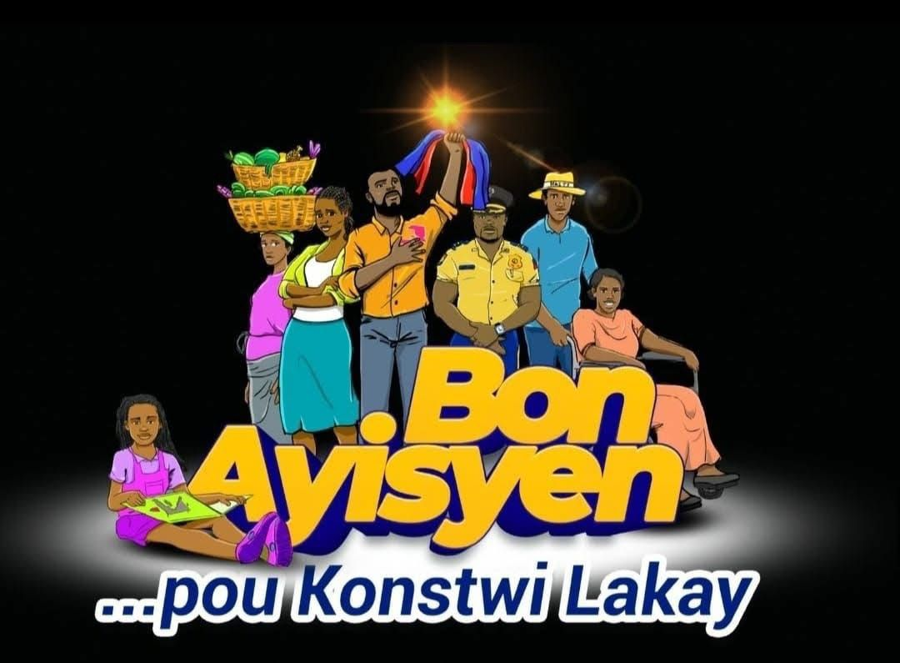
Redekouvri rasin Afriken ou yo ak fyète kiltirèl nou
Participer à la reconstruction nationale d’Haïti — Mobilisez-vous pour renforcer infrastructures, communautés et institutions face aux crises actuelles.
Renforcer l’unité des Haïtiens et de la diaspora — Rassemblez-vous autour d’une vision commune pour un changement durable par la collaboration.
Dire non à la violence et aux migrations forcées — Choisissez un retour volontaire et pacifique, pour une renaissance civique dans la dignité.
Vivre la solidarité, la dignité et l’autodétermination — Restaurez la grandeur d’Haïti selon vos propres valeurs, en renforçant les communautés locales.
Aller au-delà d’un slogan — Bak Lakay est un appel transformateur à bâtir une nation de fierté, paix et prospérité.
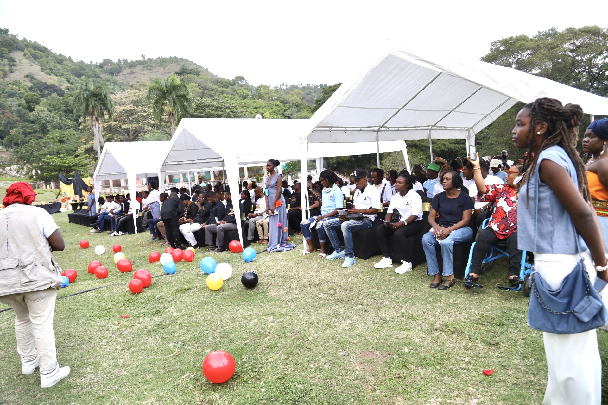
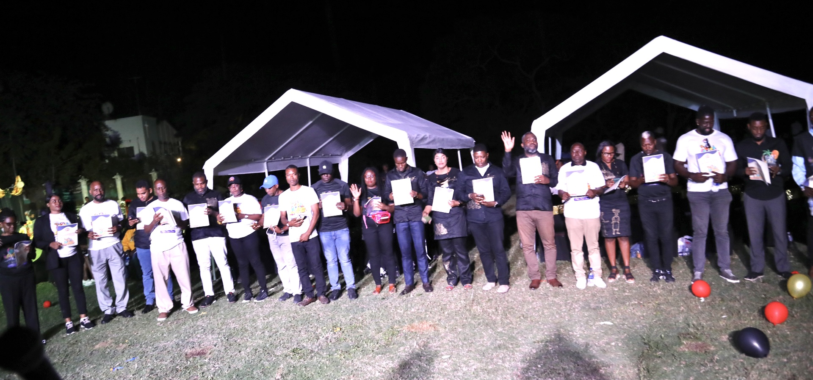
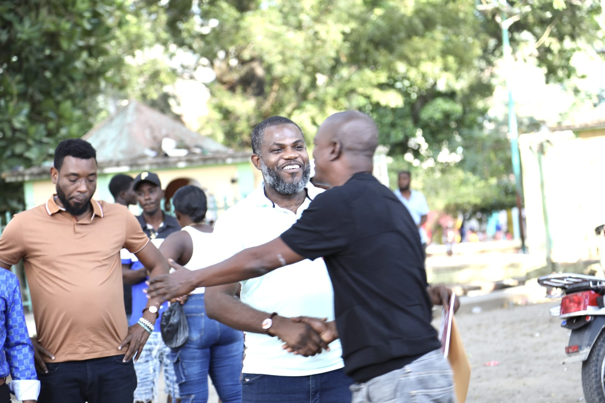
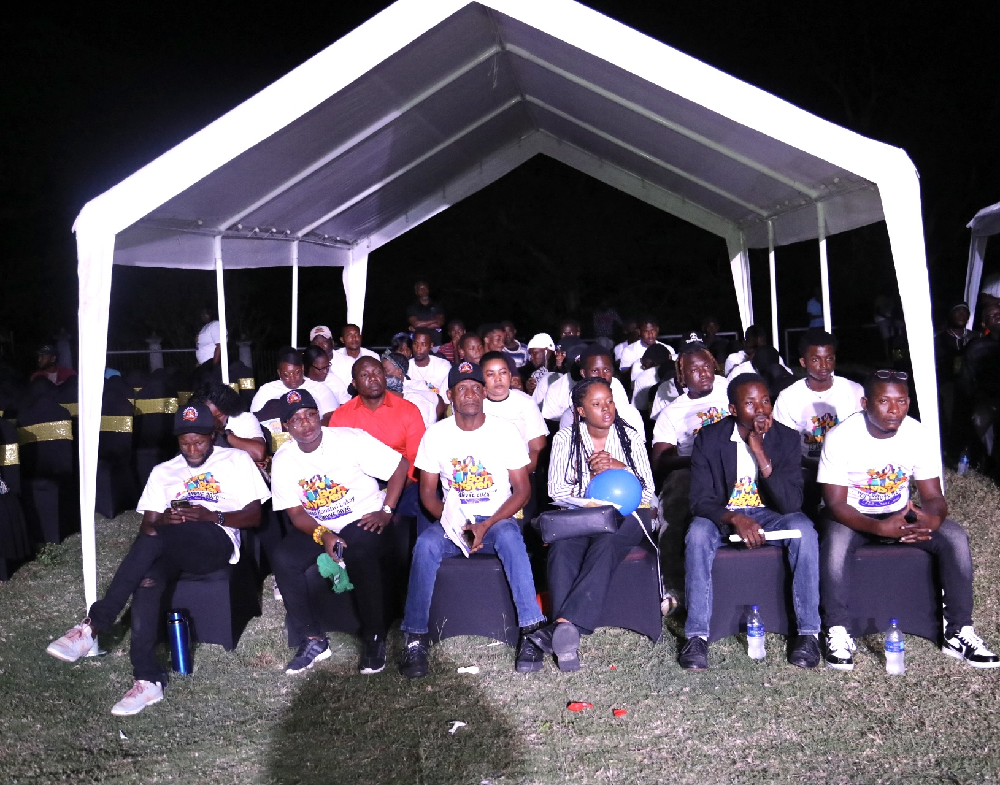
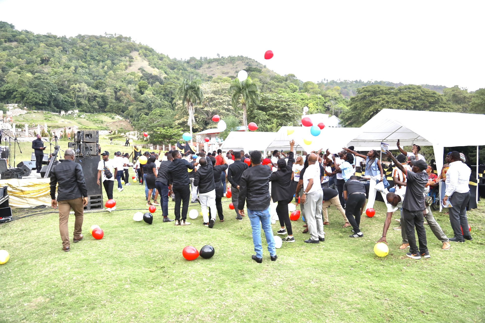
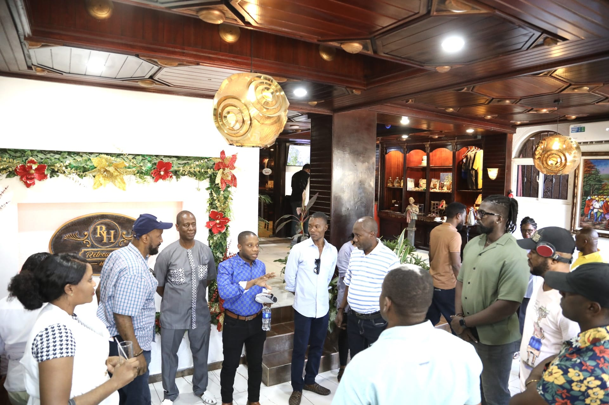
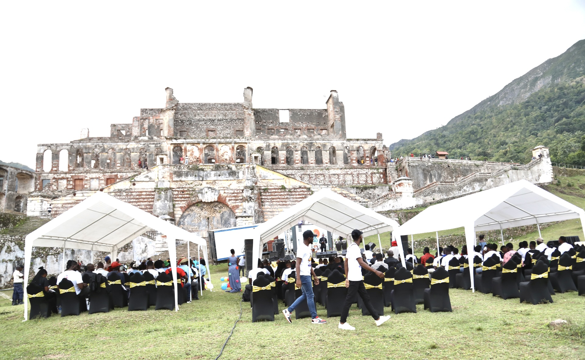
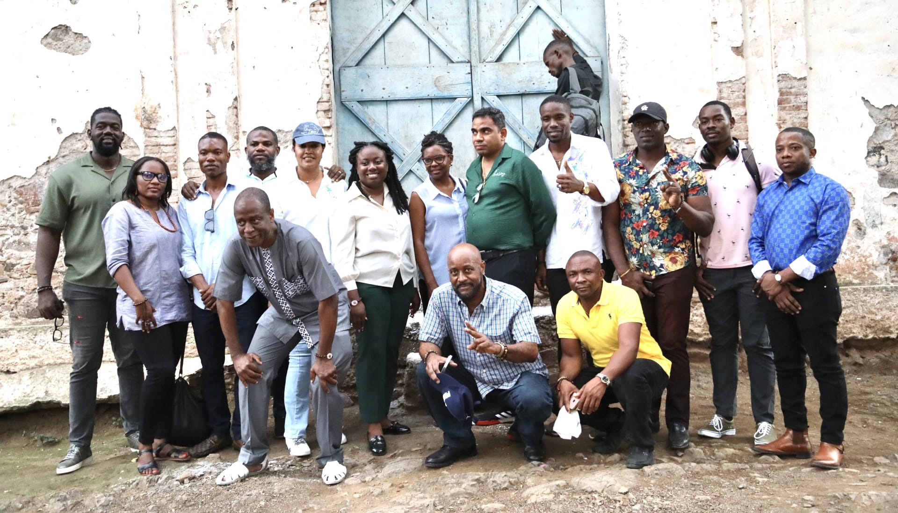
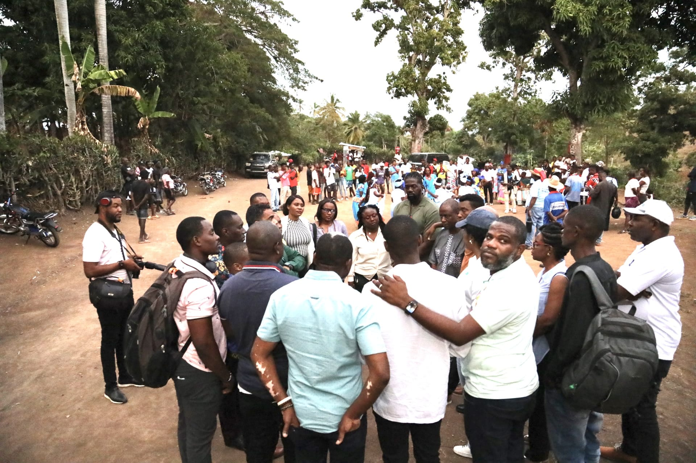
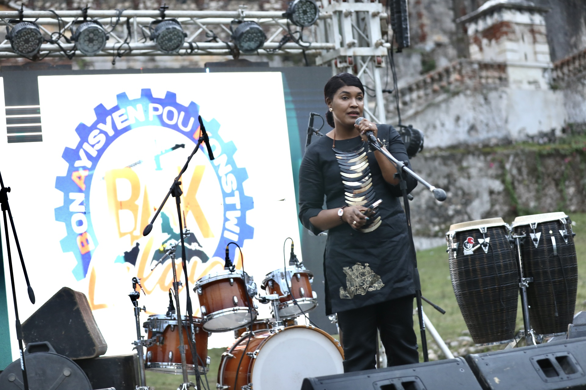
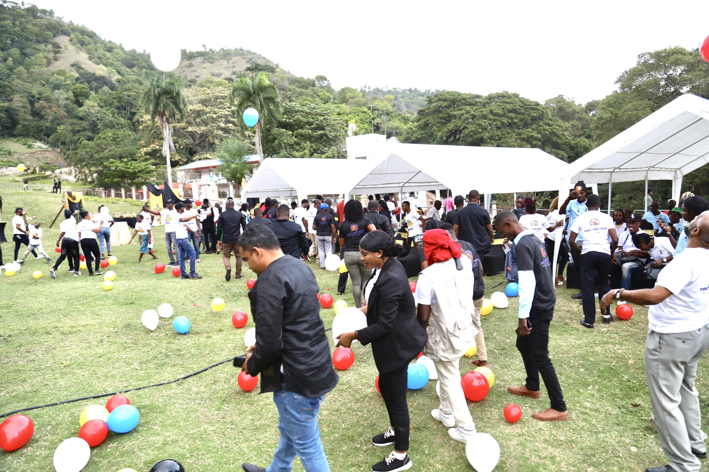
Klike sou bouton sa pou telechaje dokiman an.
Okap
kontak@baklakay.ht
+5093767-3415
Ouvert du lundi au vendredi : 9am-4pm
baklakay.ht